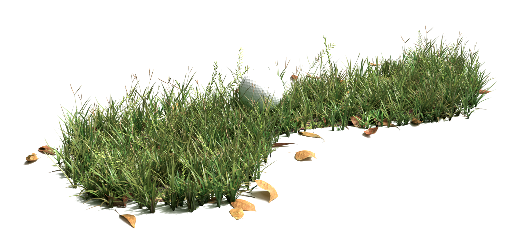

by Yucho Ho
Golf Rocks

If you've ever been to a driving range and smashed some golf balls, you would understand the indescribable feeling to watch a white dot vanish into oblivion. Though the ball is past one hundred miles, it feels very still, as Major Tom puts it. It's more satisfying than princess Jasmine on a magic carpet ride.
The other day, my coworkers were chatting about golf. They were having a good time in the office. The following summarizes their entire conversation: "Have you been to so-and-so course?" "Did you know so-and-so plays well?" "Tell me about it." Rinse and repeat. Eventually, one of the coworkers turned to me and asked: "you play golf?"
The answer is no, but I can certainly talk about this awe-inspiring sport.
First off, we get to own slaves during the game! Of course, we will be courteous and call them caddies. But they carry heavy luggages, drive cars, rake bumpy soil, and wipe dirt off our (golf) balls. That's neat!
An average golf course is 150 acre big. The golfers get to privatize everything within the land. You think moms pushing strollers can enjoy the beautiful landscape? Screw that. In order to build a golf course, the owner must invest millions of dollars that could otherwise be spent on less beneficial causes to vandalize local ecosystem. He must wipe clean of native vegetation, drive away pesty wild animals, and infuse the soil with good chemical so only selective species of grass that are pleasant to our eyes can survive. After going through all those troubles, it still takes half a million dollars annually to maintain everything. Do you understand the prestige now, mums? You wanna walk, you gonna pay.
Now, let's hear what others have to say about this magnificent game of skill.
"You know who plays golf? Guys who are too fat to play tennis"—Eve from Serendipity
Actually, Eve, that's awesome. It means golf is an undiscriminating sport that accepts those who aren't good enough for other sports. On that note, PGA (Professional Golfer's Association) lifted the ban on coloured people from playing golf in 1961. Very generous, no? That's like much later than any other sports! Golfer demographic is very likeable, too. It consists exclusively of rich men who each have ten wives.
"[Golf is] a boring game for boring people. Do you ever watch golf on television? It's like watching flies fuck"—George Carlin
Even the legendary comic/opinion leader endorses it. Golf equals maggot-making. I am always fascinated by reproductive biology of insects.
Another reason to love this game is a serendipitous encounter that occurs every time you play. Here is just one example. I was practicing my swing at a driving range one sunny afternoon. Ducks were flocking upon artificial lakes. Squirrels were running afar on the field. The folks next to my tee started talking.
"Hey man, check this out. I'm gonna hit those squirrels with my balls."
"Word. That's a good practice of aim."
What a brilliant idea! I almost wanted to turn to them and join the conversation. Why, oh why are golfers such wonderful people? These men just enlightened me that we possess the power to decide whether those tiny mammalian brains stay in their skulls or splatter on the ground. Me big man dominate. Yeah.
Had I joined them, I wanted to say: "Dude, you're genius. Hold on, I got a better plan. Let's target your fucking forehead instead!"
(End sarcasm).